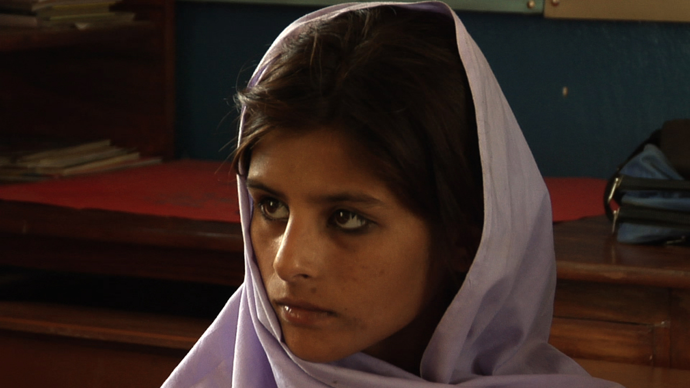

|
My Vision For Pakistan - Trailer
Produced by: Manjusha Films
Director/Camera/Editor: Hemal Trivedi
Location: Pakistan
Year: In production
Length: 2:13
Fear prevails in Pakistan, as the country battles the
extremists who terrorize its people and wreak havoc
across the land. Pakistan's very survival is at stake.
In this environment of uncertainty, three secular schools
in rural Pakistan choose to focus on their desire for a
very different future. The feature documentary My Vision
for Pakistan intimately follows four 5th-graders as they
paint, sculpt and sketch their vision for their homeland
in an inter-school art and craft competition.
|